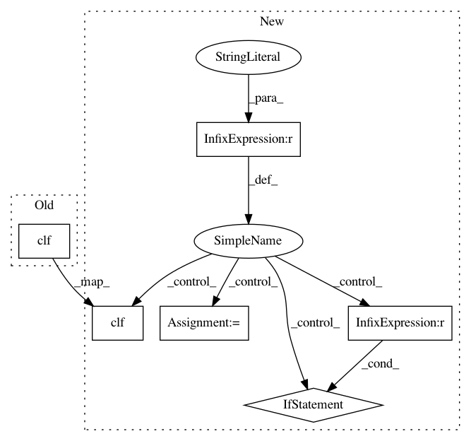

ab36ba9c62f650a2d61363ce29d5393a686d680c,lib/plantcv/analyze_NIR_intensity.py,,analyze_NIR_intensity,#Any#Any#Any#Any#Any#Any#Any#Any#,8
Before Change
cb1 = colorbar.ColorbarBase(ax1, cmap=cm.jet, norm=norm, orientation="horizontal")
fig_name = str(filename2) + "/NIR_pseudocolor_colorbar.svg"
fig.savefig(fig_name, bbox_inches="tight")
fig.clf()
return device, hist_header, hist_data, analysis_img
After Change
analysis_img.append(["IMAGE", "hist", fig_name_hist])
print("\t".join(map(str, ("IMAGE", "hist", fig_name_hist))))
if debug is "print":
print_image(cplant1, (str(device) + "_nir_pseudo_plant.jpg"))
print_image(img_back3, (str(device) + "_nir_pseudo_background.jpg"))
print_image(cplant_back, (str(device) + "_nir_pseudo_plant_back.jpg"))
filename1 = str(filename)
name_array = filename1.split("/")
filename2 = "/".join(map(str, name_array[:-1]))
fig = plt.figure()
ax1 = fig.add_axes([0.05, 0.80, 0.9, 0.15])
valmin = -0
valmax = (bins - 1)
norm = colors.Normalize(vmin=valmin, vmax=valmax)
cb1 = colorbar.ColorbarBase(ax1, cmap=cm.jet, norm=norm, orientation="horizontal")
fig_name = "NIR_pseudocolor_colorbar.svg"
fig.savefig(fig_name, bbox_inches="tight")
fig.clf()
elif debug is "plot":
plot_image(cplant1)
plot_image(img_back3)
plot_image(cplant_back)
In pattern: SUPERPATTERN
Frequency: 3
Non-data size: 6
Instances
Project Name: danforthcenter/plantcv
Commit Name: ab36ba9c62f650a2d61363ce29d5393a686d680c
Time: 2016-04-24
Author: noahfahlgren@gmail.com
File Name: lib/plantcv/analyze_NIR_intensity.py
Class Name:
Method Name: analyze_NIR_intensity
Project Name: danforthcenter/plantcv
Commit Name: c5ae3a8a16627132a551dd7bcf34e80d277cf2a2
Time: 2016-11-22
Author: mgehan@danforthcenter.org
File Name: plantcv/plot_hist.py
Class Name:
Method Name: plot_hist
Project Name: danforthcenter/plantcv
Commit Name: 4bd9e98e3a538f9ef3676db3f2f3947de138e256
Time: 2017-02-20
Author: maxjfeldman@gmail.com
File Name: plantcv/plot_hist.py
Class Name:
Method Name: plot_hist